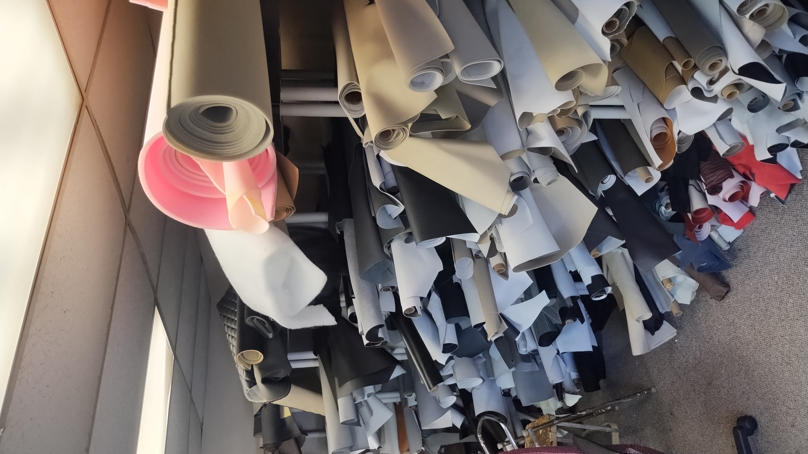

Our Services
What we repair
Fabric upholstery
Repairs for worn, torn, or stained fabric seats and interior panels.
Leather upholstery
Touch-ups and full repairs for cracked, scuffed, or torn leather surfaces.
Mobile service
We come to you for most jobs, depending on the scope of the repair.
Fast turnaround
Most repairs are completed quickly, often the same day depending on volume.

From the Shop
Stocked and ready for the job
We keep a wide range of fabric and leather on hand, so most repairs can move forward without waiting on a special order.
The Team
Who works there?
Norbert Whelan
Owner
37 years of experience in upholstery.
Melissa D.
Sewing
Specialist in leather and fabric repair.
Byron
Seat Removal & Dash Repair
Always ready to tackle any seat.
Audrey
Detail Cleaning
Extra hands for detail cleaning, on any car that needs it.